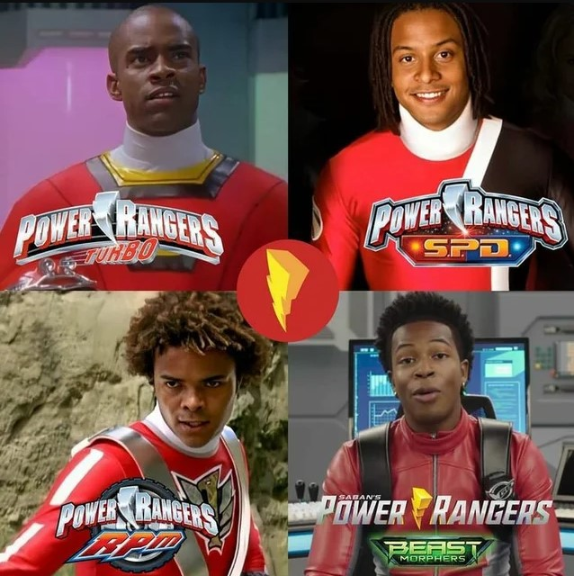
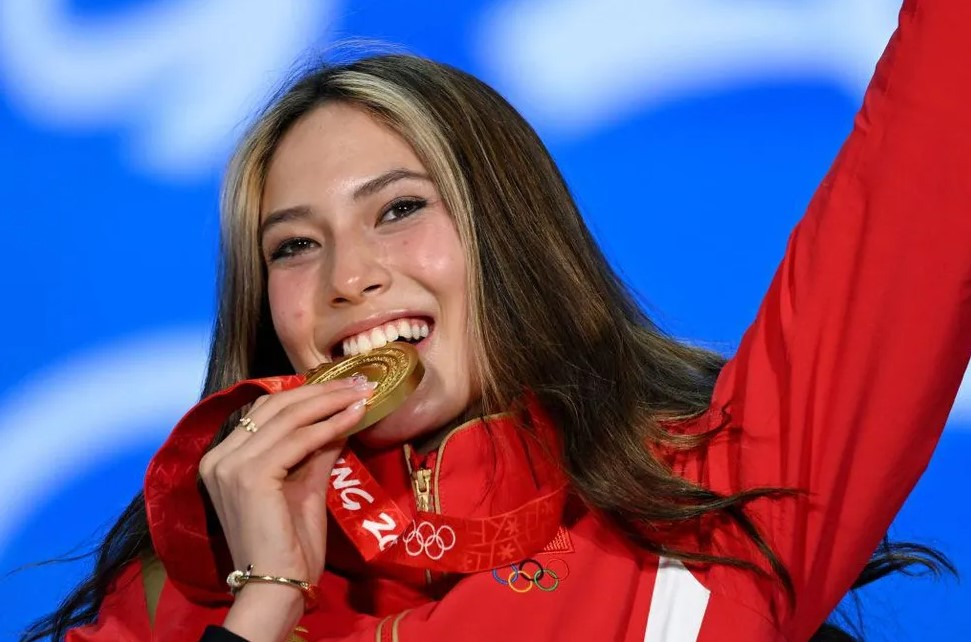

hannah curley
why does all of this matter?


T.J. Johnson, Jack Landors, Scott Truman, and Devin Daniels. Excludes the fifth Black Red Ranger, Zayto from Power Ragers Dino Fury (2021)
- Although it is one of my favorite TV show franchises, Power Rangers has had a hard time fufilling their "inclusive" wishes
- I love this show, and used to look up to it when I was younger. It was so cool, and I would sometimes imagine myself as one of the Power Rangers. Especially if there was an Asian woman in the season
- But questionable casting, lack of representation for all, and poorly handled situations discouraged people from loving this series like I do.
- This is already an issue in media today outside of Power Rangers. The fashion industry, although forever changing, was created for skinny, tall, cisgendered white people. Even the adult film/video industry is eurocentric. TV was curated so that minorities were only to be a certain type of character no matter how famous they were.
- If anything, it upsets me at how a series can claim to be so inclusive yet their actions speak louder than words. They make decisions based on money and ratings, and don't care about the youths they are possibly teaching and inspiring.
- Children from the '90's and even today are looking up to TV show characters as if they raised them. But the mistakes that the Power Rangers series has made, and plenty other series have made, cannot be ignored.
Olympian Gold Medalist, Eileen Gu at the Beijing 2022 Olympics
- Minorities were abused, and they were forced to take these roles in order to compete with their white counterparts.
- In America, the media HATES when a person of color is in charge. Except when it's basketball or football. How odd.
- Another current example is when Chinese-American Olympian Skier Eileen Gu chose to represent China at the Olympics this year. The amount of anti-China backlash she recieved was massive.
- But no one bats an eye at the white male Olympians who chose to represent a different country.